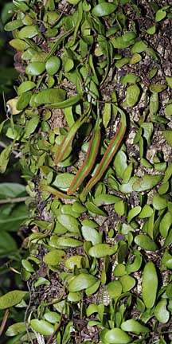
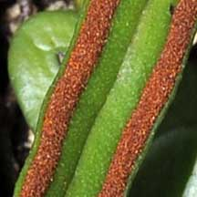
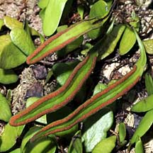
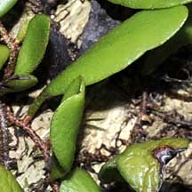
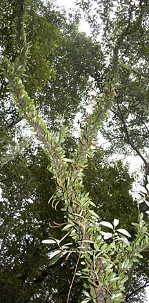
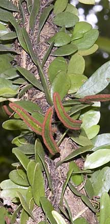

|
|
| plants text index | photo index |
| Dragon
scales Drymoglossum piloselloides Family Polypodiaceae updated Oct 2016 Where seen? This small creeping fern is an ephiphyte, that is, it usually grows on trees and not on the ground. It is sometimes seen coating branches of trees in an armour of green scales. Its Malay name is 'Sisek naga' which means 'dragon scales'. It is not only found in mangroves but also in old trees in other ecosystems. According to Giersen, it is one of the most common epiphytic ferns in the lowlands of Southeast Asia and found up to 1,000m in altitude. It is found from Northeastern India, throughout Southeast Asia to Papua New Guinea and northern Australia. Features: A fern with small round fleshy glossy fronds (about 1cm across) without stalks. Sometimes also more oval in shape. These are the sterile fronds. The fronds bearing spores (fertile leaves) are long and narrow (3-15cm long) and held on a stalk. Sometimes the tips are branching. The thin stems are covered by scales and there are minute star-shaped hairs on the underside of the frond. All these help to conserve water. Role in the habitat: These tough little ferns pave the way for less hardy ferns to settle on the dry trunks and branches of trees by creating more conducive micro-habitats. Human uses: According to Giersen, the leaves are used to treat rashes, whilst a decoction is used in a lotion for smallpox, and used in a poultice for headaches. |
 Woodlands Park, Apr 09 |
|
 Brown spores on the fertile frond. |
 Fertile frond. |
 Sterile frond. |
|
 Mandai, Mar 11 |
 Mandai, Mar 11 |
| Dragon scales on Singapore shores |
| Photos of Dragon scales for free download from wildsingapore flickr |
| Distribution in Singapore on this wildsingapore flickr map |
|
Links
References
|